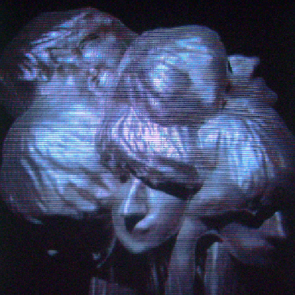
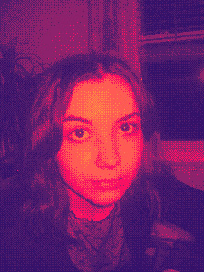
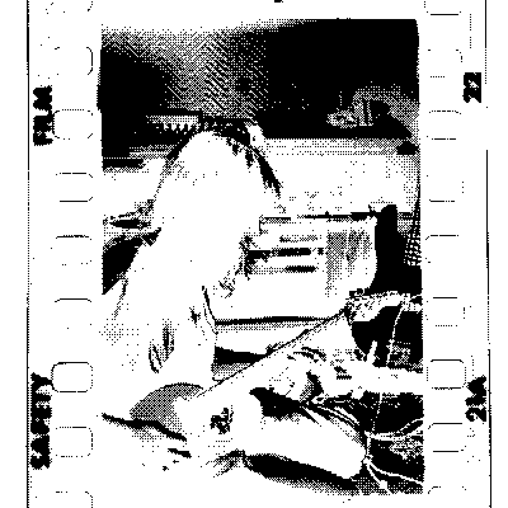
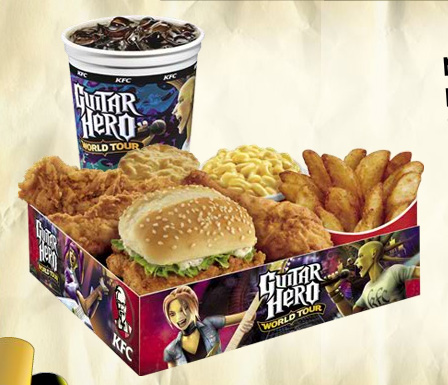
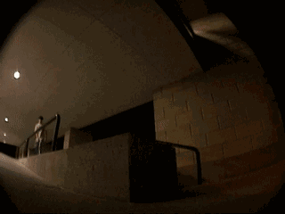
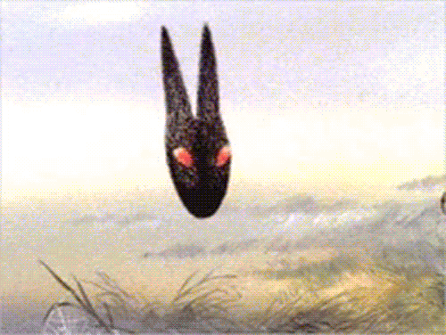

pretty little winter
|
hello !!!
welcome to my website
:-) this is a space that i will fill with all the different things i
like to dohere are some things i enjoy : playing music ! making videos with my camcorders 3d modeling guitar hero some things i would like to get better at : skateboarding coding drawing i love to make cool stuff and want this site to be a cool way to share my personality and creations with the world wide web thanks for visiting !!!! |
 |
| 7 / 12 /2023 what uppppppppp i got over my creative slump and started making cool shit again, i am back into blender and i made a bunch of random songs recently, it has been so much fun i just wanna do this stuff all the time, it blows going to work after having such a creative weekend i haven't done too much music recently but ive been finding my direction of stuff i like to make and now i just make whatever i like, making things for yourself it the mooooove and making cool shit in blender is awesome idk what else is goin on, work is better but still tense, but now im just looking at it like i dont really care and i just do my job and make my money, no need to be tweaking i must be on estrogen the way my racks growing right now my mind is peak coolin, i am in a flow state of creative energy and i will act on my urges to create maybe i will post things for other people to enjoy as well :3 |
 made this in blender the other day |
| 6 / 19 / 2023 the creative mindset slammed on the breaks and got rear-ended and burst into flames idk what it is i am very depressed now, maybe its because i am not on my stimulants now fuk the adderall shortage for real i also dont really like my psychiatrist she gives me weird vibes i should probably discuss being trans and being on hrt to her but she seems lowkey transphobic idk i feel like u shouldn't be able to be a doctor if ur transphobic or homophobic lol just saying i am also not happy with my work situation no one is right now and the office has a terrible vibe. my coworkers are mad at my manager and rightfully so he kinda just gives everyone else his work to do and its pretty shitty. i tend to just keep my head down and get my work done which kinda fuckin sucks lol, i do not feel like i am connected to my work like anyone else is but yeah my manager is kinda not good at his job and everyone wants to leave and it just stresses me out a lot, even though its not really my problem i also cant deal with the hours i work any more getting home at 9:30 just doesn't work for me, i miss sydney so much i have hung out with syd maybe 3 or 4 times this month that is insane i really miss my unemployed era where i just hung out with syd every day lol i have been thinking about going back to college for computer science and working at starbucks for the ffs insurance lol maybe ... |
 syd <3 |
| 6 / 16 / 2023 my mind has been switched to creative mode now i have infinite redstone and the mob spawner eggs so maybe i will build a sethbling automatic piston door in my bedroom i cut my bangs the other day and am back to peak mental performance my brain completely threw out the idea of making demos for anything i tried the longest to make a final product from the start totally skipped every step to refining something i want to be good so now the workflow is: laptop demo ---->> 8 track final project after seeing king gizz i entered my jam mode and now i just wanna write jam licks might be awesome but idk it is officially one month of this blog and i am very infrequent with my updates,, i apologize! jk this blog is actually just really chill, one day it will be on the front page of google and every kid in their fourth grade typing class will visit and become really inspired |
 studio bts pic by my friend jamie |
| 6 / 7 / 2023 yooooooo whats up blog diary whats up i have been doing good, been getting through the days lol i like to update this blog when im in a good mood and i felt really good driving home from work today :) i think im overcoming a bit of a depressive r u t, now things are looking up cleaned my room a little and made my bed -> full mental reset so now im back to peak creativity and happiness what have i been up to: chillin with cole and charlie disc golfing (getting better a little each time yoooo) workin work been chill, i am just going worker bee mode gonna get this big project done asap editing like 100 photos we took for a photobooth haha its so fried but its fun im chillin when i do it i become so zen i made some beats on my laptop this weekend it was cool, i would like to make a dance song i really gotta get a haircut soon, i think once i get a haircut i will be in prime mode for creation ///i just need a seal on my dome to lock the thoughts in/// thats all ive got for now, i will return with something new to share soon , lots of love |
 i eat this every day |
| 5 / 23 / 2023 had a very eventful weekend !!! made cool stuff with my friend jamie on friday we recorded a 7 minute, 8-part song all on my Tascam 488 took a lot of planning to make sure we didn't record over anything it was pretty amazing and the song is so good, it is hilarious on saturday i bought the new zelda game and now im gonna go back to the gamestop and tell them they changed my life 10 / 10 this is the best video game i have ever played i played many many many hours this weekend so that was sweeeeeeet on saturday i also did some kayaking and chillin which was sweet and then sunday i played some disc golf with cole and hung out with syd and then monday i caught a bass in the river what an amazing weekend ! i made some great purchases this weekend besides zelda, i got two new disc golf discs and the new putter i bought is killer it is literally rubber it is so funny but it doesn't roll away when i miss a putt so it is perfect for me LOL back on the grind at work again, but this week seems really light so maybe it won't be so draining in the evening. i just gotta screen detox for reallll thats the brain suck that melts my eyeballs and gives me headaches but i loveeee to make things on my puter and also listening to my tunes i am going to go to bed earlier tonight, i want to maybes skate or play a song tmrw morning so ill try to get up EXTra early :) |
 sick ass clip of cole from a couple years ago |
| 5 / 18 / 2023 almost the weekend wooooo i am going to hang out with my friend and record some music tomorrow i am totally up way too late right now though i have got to work earlyyyy tmrw workk has been so goofy i kinda have a weird vibe about like jobs in general i am so quiet at work like i really keep to myself but i think i do enjoy being real with my coworkers they can totally be chill im just like way younger than everyone there so its a little goofy but its been pretty chill i had someone come in to record a song and it was called space warfare and it was about jesus beating up the devil in space and there was a bar about punching the devil in the esophagus and giving him asthma it was hilarious i am still thinking about how good it was i like to keep quiet about things i do but sometimes i just start blabbing at work ! i want to just do my things and not tell anyone L O L idk if that is just like me being weird i think if people say the things i do are good then im like sweet this is good enough then ! i do not push the limit that aint good !!! so i am going to just work on projects in secret and then one day reveal it all and be like check it out i do not plan on showing anyone this website, at least not until there is a lot of posts that would be so sweet to have my secret archive of brain flow |
 work selfie |
| 5 / 16 / 2023 this is my first entry on the site which is pretty cool, maybe i will make it blog style or maybe like a diary idk :0 but i dont have anything too interesting to put for an entry right now, i would love to work on a song this week, i am going to hang out with my friend friday and maybe we will record a song i am setting a goal to seperate work brain from home brain they need to be two completely seperate entities, though work brain can borrow from my home brain but never vice versa if i could come home from work and feel completely detatched from the day i had wooooooo that would be perfect so that is what i am planning on doing, going home and having something to do that doesn't involve work, or stress, or makes me feel bad i wanna skateboard more but i get home so late ! i gotta skate my new curb / rail i built, i want to get really good this summer |
 summer time essentials: open up my bedroom window stay up really late take a cold shower get outside for a while and try to see everything a mile away |